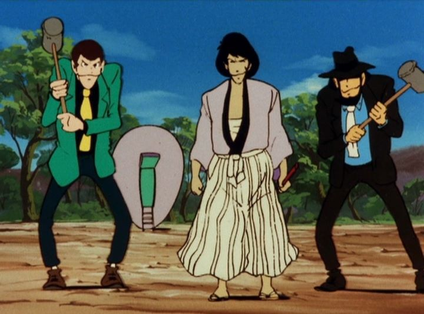

Discotek deserves a lot of praise for their license rescues of anime for North American physical release. Not the least of which is their slow mission to release the entirety of "Lupin the Third," from his hundreds of television episodes, theatrical films, teleivison films and OVAs. Lupin is a classic character in Japan, originally being animated in 1969, and to this very day (2019 as of this writing), continuing to receive adaptations. I once told a friend he is as synonymous as Mickey Mouse is in America... although, given the gentleman-thief heists and occasional violence and sex involved, I realized that "James Bond" might have been a better comparison.Anyway, it was an interesting exercise to watch Discotek's release of "Lupin the Third - Part I," the original television series that ran from 1971 to 1972. Since then, Lupin had three follow-up series, changing his jacket color each time, from green to red to pink. That ended in 1985, but thanks to renewed interested after the success of the spin-off television series "The Woman Called Fujiko Mine," an official "Part IV" and "Part V" would release after 2015. Arguably, the "red jacket" Part II is the most well-known, but how does the original Part I hold up today? Well, when I say it's an exercise, that's because that's exactly what it felt like...Admittedly, while I like Lupin and the fun of the series, it can be a struggle to get through some of the older series or films. The best of those ideas are still fresh in Part I, but that doesn't mean it's for everyone, and definitely not ideal for marathoning. As per the franchise, the series involves a series of unrelated adventures for Lupin, the grandson of the famous gentleman thief Arsene Lupin. Lupin the Third is one of the greatest thieves of the modern (circa 1970) world, best known for announcing his plans in advance to create a challenge for himself and the authorities. Lupin often works with Jigen, a "professional super-cool gunman," and the mysterious samurai Goemon, and occasionally cross paths with the beautiful femme-fetale Fujiko. Inspector Zenigata is always on the case, dedicating his life to catching Lupin, but as of yet, unable to succeed. The franchise has always suffered for throwing in obvious archtypes of characters purely for their cool factor. Seriously, Goemon feels like he wandered in from a show set 1,000 years earlier! It doesn't help that an extensive opening and ending introduces each character over and over in such a cheesy manner. This first series definitely needed time to find it's footing in terms of subject matter and pacing: while I generally feel this series is suitable for family audiences (especially compared to certain adaptations), it is meant to be a gritty crime-noir adventure for adults.  Having released in 1971, the show also doesn't age well visually. Naturally, the animation uses fairly extreme use of limited animation, and the hand-painted cels are rarely clean or detailed. From one perspective, there is a warmth here that you can't get from modern anime, but it can be distracting to see how far we've come. The Japanese-only voice acting (an English dub may or may not have once existed, but if it did, it's long lost) and it's delivery is also a product of its times. Only the cool jazzy soundtrack (complete with a cool but silly theme song) seems to hold up today.This isn't to say that the show is entirely a wash. If watching individual episodes at a low frequency, it can be an enjoyable way to introduce yourself to the characters. The action and suspense can be thrilling in some of the better episodes, as well as light-hearted and humorous. For that matter, there are a few well-written gems in the series if you're willing to search for it. And the historical value exceeds just being the first Lupin series: Hayao Miyazaki and Isao Takahata, both famed directors for Studio Ghibli, directed several episodes of "Lupin the Third - Part I" before going off to work on "The Castle of Cagliostro" some years later, and eventually founding Ghibli. The good episodes aren't exclusively theirs, but it is fascinating to recognize characterizations, themes and animation and direction styles that can be directly compared to their later works. Overall, there's enough variety in the stories across the entire season to never be fully bored, if only just.If only for the availabilty (Discotek's release, complete with the 1969 pilot film, remains affordable and easy to find), I would recommend "Lupin the Third - Part I" as a good choice over the first three series. And it's worth sitting through at least a few of Lupin's television episodes. But to sit through the everything is like asking one to purchase the complete collection of "The Flintstones" on DVD: it can be expensive both on time and money to sit through the whole thing, an exercise in nostalgia for a time long lost in television, the value of which varying on your own age. Again, "Part II" and "Part III" are significantly longer, with over 200 episodes in between them... so "Part I" is probably the easiest, and most interesting, choice to swallow.
- "Ani" More reviews can be found at : https://2danicritic.github.io/ Previous review: review_Lupin_the_Third_-_Missed_by_a_Dollar Next review: review_Lupin_the_Third_-_Part_IV_-_The_Italian_Adventure